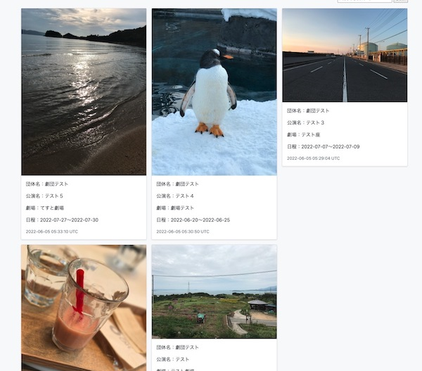

tickets
（舞台芸術向けチケット販売機能付きポータルサイト）
開発環境
Ruby / Ruby on Rails / MySQL / GitHub / Heroku / AWS / Visual Studio Code
-
概要
制作時間 200時間 URL https://tickets-0111.herokuapp.com/ ID admin PASS 1564 -
動作テスト
テスト用アカウント
mail test@test PASS a11111 管理者テスト用アカウント
mail test@com PASS a12345
OUTLINEアプリケーションの概要
オリジナルアプリケーションとして、チケット販売機能を有する舞台芸術向けのポータルサイトを開発しました。
主な機能は、公演の出品機能と購入機能です。
①公演の出品
ヘッダー右側のCompany menuから管理者ユーザーの新規登録を行います。
次にCompany menuのExhabitボタンから公演の内容（公演ビジュアル2枚、タイトル、公演日程、概要、金額）を入力し出品します。
トップページ（一覧ページ）の画像をクリックして詳細ページに遷移し、ページ下部の公演回登録フォーム（日付、開演時間、座席数）から販売する公演回を登録します。
②公演の購入
ヘッダーから利用者ユーザーの新規登録を行います。
次にトップページ（一覧ページ）の画像をクリックして詳細ページに遷移し、公演一覧から販売している公演回を選びます。
選択した公演回の購入ボタンをクリックし購入ページに遷移して、購入枚数を選択し購入ボタンを押します。
-
開発に至った経緯
①演劇団体目線
コロナ禍で公演チラシを配ることが難しくなってしまった演劇団体向けに、不特定多数に宣伝できるWebサイトはニーズがあるのではないかと考えたこと。
公演を行うにあたって助成金を申請するときに、証明する必要がある団体の実績が一目でわかるポートフォリオ的なサイトがあると良いのではと考えたこと。②利用者目線
特に小劇場演劇だと、web予約して当日受付現金払いが慣例でキャッシュレスも浸透していないこと。
コロナ禍で対面での接触を減らす運営になっているため、これをきっかけにデジタル化を進められないかと考えたこと。以上二つの目線から、実際にアプリケーションを利用すると想定される団体側のスタッフと観客側の利用者にヒヤリングを行い作成しました。
-
開発で工夫したこと
コンセプトはポータルサイトと業務アプリケーションの融合としました。
ポータルサイトの機能としては、主に観客が公演ビジュアルを並べたトップページから気にいった公演を選び購入するものです。
イメージは、本屋の平積みの棚から本をジャケ買いする様に演劇の公演を買える様なサイトです。既存のwebサービスは業務アプリケーションにポータルサイト機能がくっついているものが多いので、ポータルサイトがメインで業務アプリケーションの機能も備えているサイトを目指しました。
-
今後実装したいと思っていること
1つ目にレビュー機能の実装をしたいと考えています。
演劇の公演は初動の売れ行きが鈍く、特に初見の団体の作品は観客側は購入のハードルが高いので、見た人のレビューを閲覧する機能をつけることによって購入を検討する材料の一つとしてもらうことが狙いです。
2つ目が、SNSとの連携機能です。
特にTwitterの拡散力は凄まじく、初日の公演のTwitterの口コミが良いかどうかで売れ行きが大きく変わるので利用する団体のためにも実装したいです。